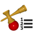

けん玉検定
けん玉検定（GLOKEN）の技の練習を記録するアプリ
各クラスの級の技をまとめて練習したり、また模擬検定を行うことができます。
各クラスの級の技をまとめて練習したり、また模擬検定を行うことができます。
けん玉ワールドカップトリックシート
けん玉ワールドカップのトリックの習得度合いを視覚化するアプリ
けん玉練習帳
けん玉の練習を記録するアプリ
練習記録をグラフ化し、上達度合いを把握することができます。
級・段位の技をまとめて練習したり、また模擬試験を行うこともできます。
練習記録をグラフ化し、上達度合いを把握することができます。
級・段位の技をまとめて練習したり、また模擬試験を行うこともできます。
けん玉認定表
けん玉の認定表を表示するアプリ
公益社団法人日本けん玉協会が制定したけん玉の認定表を表示します。
公益社団法人日本けん玉協会が制定したけん玉の認定表を表示します。

けん玉技一覧
けん玉の技を一覧するアプリ
級・段位の技、大会などの技を一覧します。
級・段位の技、大会などの技を一覧します。